Kunz AG Gipsergeschäft · Neuenkirch, seit 1978
Ihr Gipser.Tradition, Qualität und Handwerk aus Leidenschaft.
Familienunternehmen in zweiter Generation mit rund 20 Mitarbeitenden. Wir arbeiten präzise, sauber und termingerecht, bei Neu- und Umbauten sowie Renovationen in der ganzen Zentralschweiz.
Unsere Leistungen
-
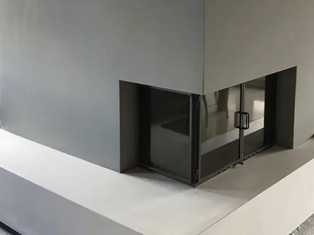
01Innen
Innere Gipserarbeiten
- Nassputze und Lehmputze
- Verschiedene Abriebe
- Stuckaturen
- Isolationen und Sanierungen
-
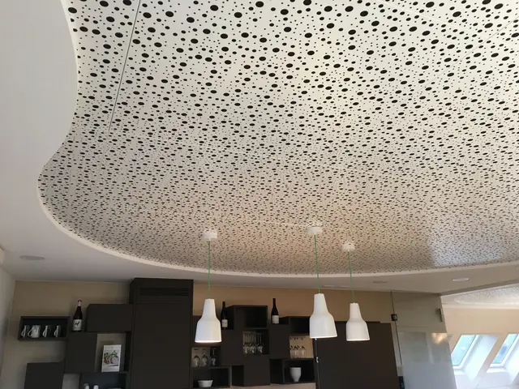
02Leichtbau
Trockenbau / Leichtbau
- Wände und Vorsatzschalen
- Decken und abgehängte Decken
- Akustikdecken
- Ohne lange Trocknungszeiten
-
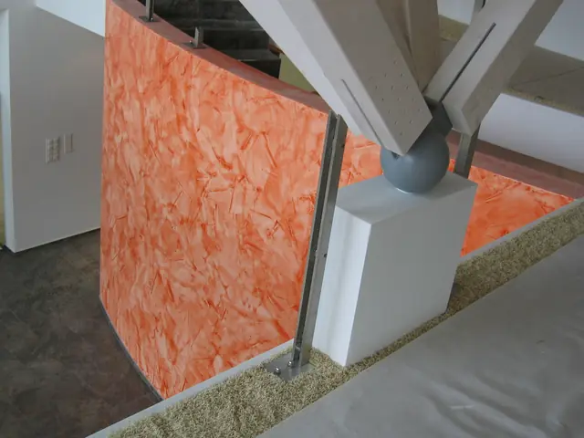
03Renovation
Renovationsarbeiten
- Schall- und Wärmedämmung
- Stucco-Wände und Magnetputze
- Weiss- und Glattputze
- Biologische Putze, Brandschutz
-
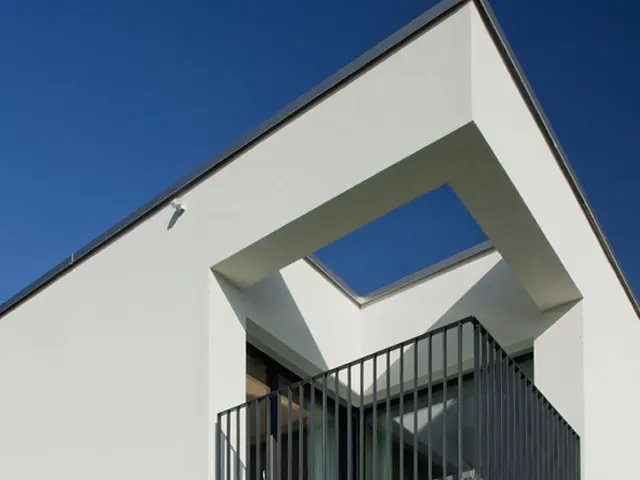
04Aussen
Aussenbereich / Fassade
- Verputzte Aussenwärmedämmungen
- Fassadenisolationen
- Fassadensanierungen
- Fassadenverputze
Innen oder aussen: Wir stehen für Qualität, Zuverlässigkeit und einen Service, der sich ganz an Ihren Bedürfnissen orientiert.
Offerte anfragenReferenz-Objekt Fassade
Sanierung «Alte Käserei», Altbüron.
Die Fassadensanierung am Erpolingenweg in Altbüron in drei Bildern: vorher, bei unserer Arbeit und das Endresultat.
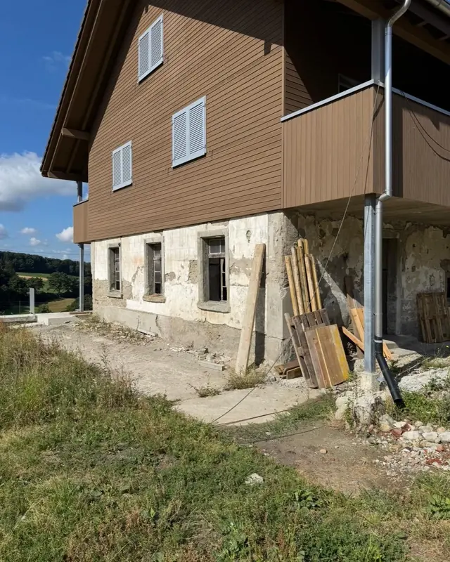
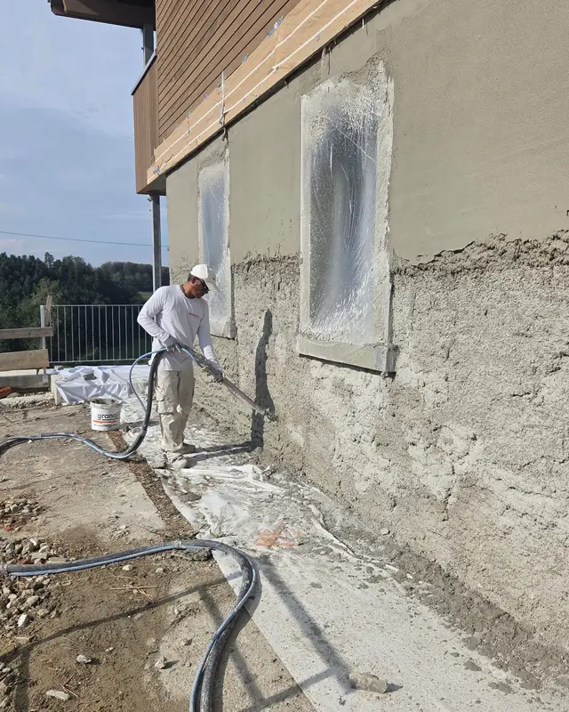
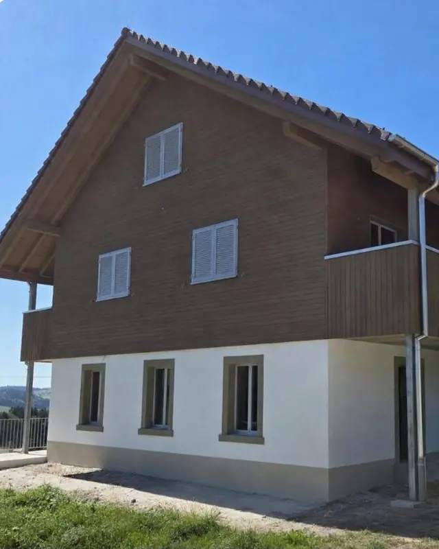
Fassaden bei der Kunz AG: Ansprechperson ist Mathias Kunz, eidg. dipl. Gipser.
Mehr zu FassadenReferenzen
Aus unseren Arbeiten.
Eine Auswahl aus unseren Referenz-Objekten: innen, im Trockenbau und an der Fassade. Tippen Sie auf ein Bild, um es gross zu sehen.
-
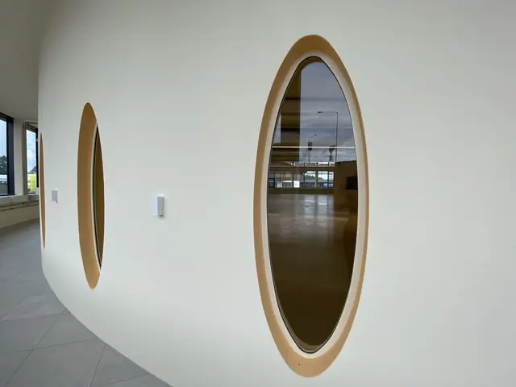
InnenWand mit ovalen Öffnungen -
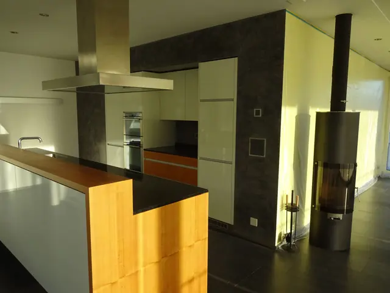
InnenStuccowand Veneziano, anthrazit und zitronengelb -
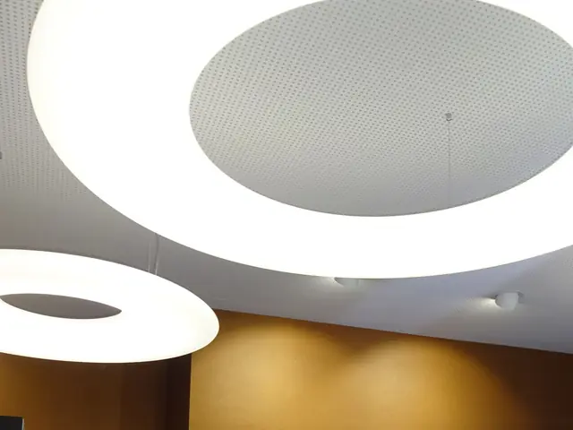
TrockenbauHeruntergehängte Akustikdecke, rund -
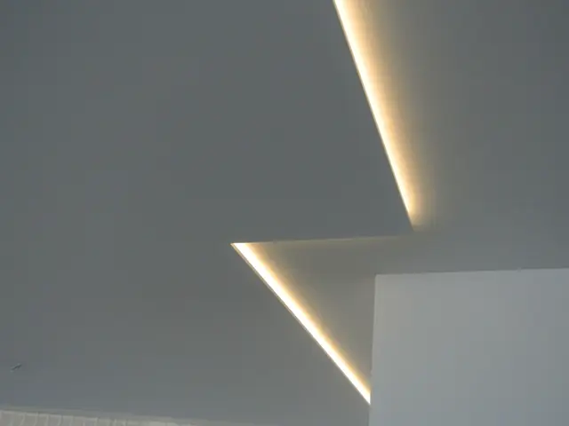
TrockenbauHeruntergehängte Decke mit indirekter Beleuchtung -
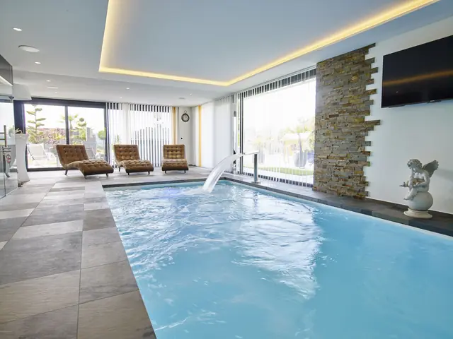
TrockenbauDecke mit indirekter Beleuchtung im Hallenbad -
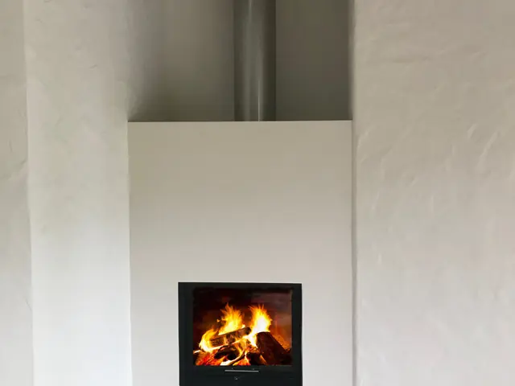
InnenCheminée mit Rustikalputz -
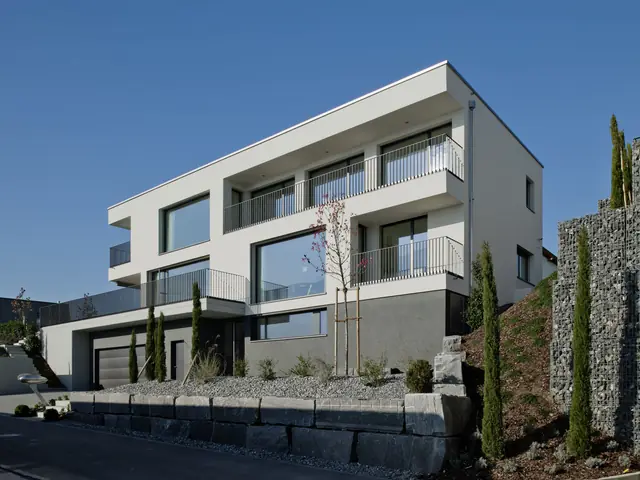
FassadeFassadenverputz, Mehrfamilienhaus -
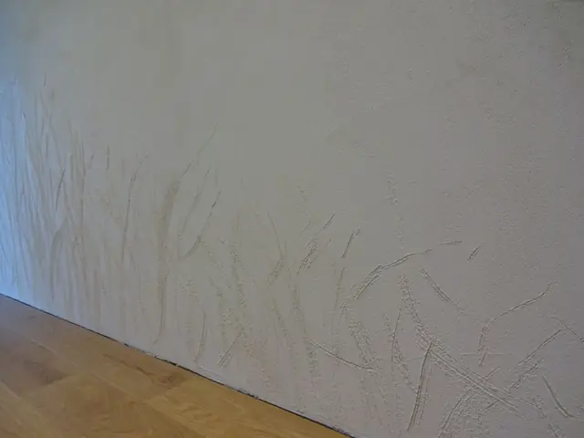
InnenAbriebwand mit Freihandverzierung


Kundenstimmen
Das sagen unsere Kunden.
-
Wir sind sehr zufrieden, super Arbeit und auch Ordnung auf der Baustelle.
AndréAesch
-
Vielen Dank für eure Arbeit. Das ist tipptopp geflickt.
SabineNeuenkirch
-
Die Decke und der Raumtrenner sehen wunderschön aus. Vielen Dank dafür.
AnjaEmmenbrücke
Unser Team
Das sind wir.
Rund 20 Mitarbeitende, ein Familienunternehmen in zweiter Generation. Geschäftsführer ist Stefan Kunz, eidg. dipl. Gipsermeister und Lehrlingsausbildner.
Gipserteam Innenbereich
Stefan KunzGeschäftsführer
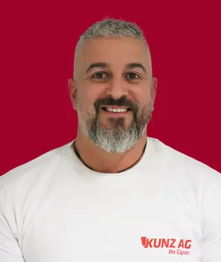
Ivano Congedi
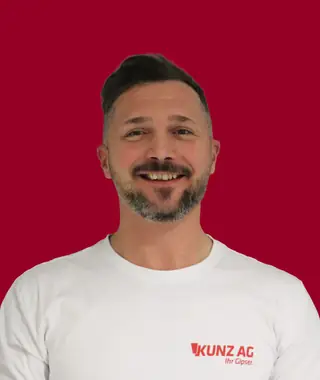
Nicolò Gadaleta
Suad Gushi
Florian HurniEuroSkills-Silber 2025
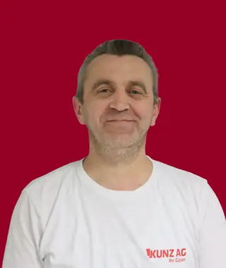
Azmir Kalajdzini
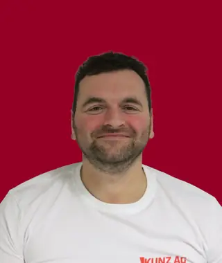
Rasim Kalajdzini
Jordy Ottiger
Mahdi AhmadiBester Gipserpraktiker EBA 2026
Trockenbau
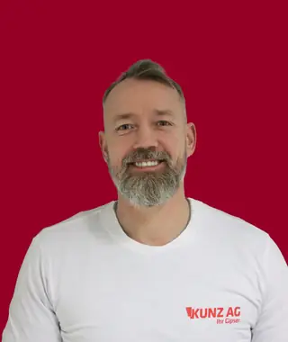
Ben Ulrich
Vasko Trajkov
Gipserteam Aussenbereich
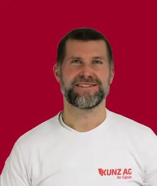
Mathias KunzGeschäftsleitung
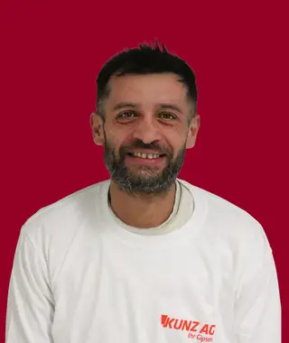
Borislav Jernejsek
Guido Koch
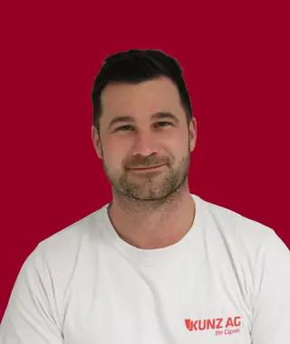
Janos Meszaros
Büro
Monika KunzGeschäftsleitung
Celine Christen
Lernender
Ledion OsmonajGipser-Trockenbauer EFZ
Seit 1978 in Neuenkirch und Umgebung
- 1978Meinrad Kunz gründet den Betrieb als Einmannbetrieb.
- 1982Erster grosser Auftrag: das Einkaufszentrum Stäg in Neuenkirch.
- 1998Stefan und Mathias Kunz steigen ein, der Trockenbau wird zum Standbein.
- 2008Neuer Firmensitz am Maiengrün 2 in Neuenkirch.
- 2012Die Kunz AG Gipsergeschäft entsteht, die zweite Generation übernimmt.
Lehrbetrieb seit 2003
Ausbildung mit Spitzenresultaten.
- 2015
Silbermedaille an der Berufs-WM in São Paulo: Yassin Fischer
- 2022
SwissSkills: 3. Platz für Florian Hurni, 5. Rang für Vanessa Burch
- 2025
Silbermedaille an den EuroSkills in Herning: Florian Hurni
- 2026
Bester Gipserpraktiker EBA der Schweiz: Mahdi Ahmadi
Seit August 2026 lernt Ledion Osmonaj bei uns Gipser-Trockenbauer EFZ.
Kontakt
Nehmen Sie mit uns Kontakt auf.
Für eine Offerte beschreiben Sie kurz Ihr Vorhaben und geben die Objektadresse an.